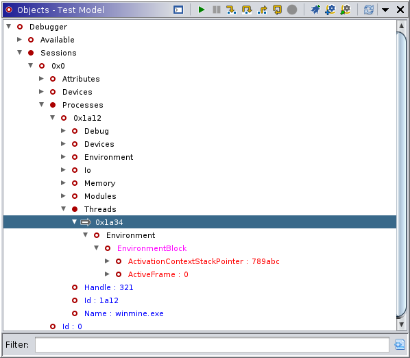
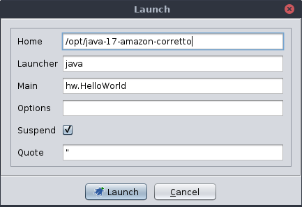
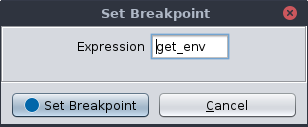

Resume (Continue, Go)
Resume (Continue, Go)|  |
The Objects window permits the user to interact directly with a connected debugger and its targets. Along with the command-line interpreter, it is the primary mechanism for issuing commands, e.g., step, to a target. Commands are accessible from the tool bar, the pull-down, and pop-up menus. Commands are enabled in two ways: (1) the object selected has a property that marks it as a logical target for that command, or (2) the object has an ancestor for which the command makes sense. The Enable By Selection Only function determines whether both options are in play. For example, threads and inferiors/processes are both resumable, so the Resume action works on both. For many of our targets, processes are interruptible while threads are not. Nevertheless, if Enable By Selection Only is off, you can interrupt a thread because it descends from an inferior or process. In almost every case, the selection directly or indirectly determines the set of valid or enabled actions.
The application of these special properties to each object to determine its behavior and relevant actions allows all objects to be treated generically. This feature has several powerful implications. All objects may be represented in many ways, and one representation may easily be converted into another. The default representation is a tree, and the Objects plugin starts with a tree to represent a debugger session's state. Any portion of the tree may be reproduced as its own subtree or as a table or as a graph using the Display as... actions. Any portion of the display may be exported from or imported into the plugin. The generic aspect of all objects also allows the user to process them in scripts or plugins in common ways. For example, you could write a script to walk the entire tree and find objects with "File" in the name or with the value 0xDEADBEEF.
The hierarchy reflected in the initial display has either been derived from the target, as is the case with WinDbg Preview's dbgmodel.dll engine, or imposed by the designers of the current connector's "model." The model has a type schema chosen by the authors for a particular debugger target. It usually mirrors to some extent the underlying relationships in the native debugger, but need not, and is usually fixed for that target. Commands executed within this plugin are passed from the GUI through the model, typically manifesting in native API calls, or commands sent to a special interpreter of the debugger. This plugin does not operate on traces, except for actions which initiate a recording.
Launches a new target using the current program. This action is the fastest and probably most common way of starting a debugger target on an existing connection. The action attempts to launch the program in the currently selected tab of the static listing window. The success of the action depends on the program being associated with an existing executable file on the local system. The value associated with the program may, of course, be checked using the About Program File function.
Launch a new target. Sometimes you may wish to launch a program which has not been imported, to launch a program with various configuration options, or to pass arguments to the program. The launch dialog allows you to do this. Typically, the dialog will present a single empty box into which you can enter the command with arguments as you would on a command line. For some targets, the dialog will present pre-configured options corresponding to common launch modes for the platform.
For example, the CommandLineLaunch version of the dialog for JDI targets displays a check box for whether the target should be suspended on launch, the default quote character used by the command line, the program used to start the virtual machine (java), the path to where it's installed, and fields for the name of the class and any user options you might supply:
|  |
The options displayed by the Launch command are, for some targets, connected to the currently selected item under Connectors. For example, the dbgmodel.dll connector offers several launchers: one for command-line launch, one for attach, open for kernel-mode debugging, and one for opening previously-generated dump or TTD trace files.
Attach to a running target. If the debugger has available a list of running targets for the local system, the attach action provides a convenient way to select and attach to an existing process. If the highlighted object in the provider is considered "attachable", the attach action attempts to connect that element. The list of "attachable" targets is typically displayed in the tree under Session/Available. Bear in mind it often takes time to populate the Available list, which may need to be manually refreshed.
Detach from the selected target, usually allowing it to resume execution. As a consequence, this action terminates the trace for the current target, if applicable.
Re-attaches to the selected target. (Some targets require a separate action for re-attaching vs. attaching for the first time. If so, this action provides that capability.)
Kill the current target. As a consequence, this action terminates the trace for the current target, if applicable.
Interrupt the current target's execution.
Resume (Continue, Go)Allow the current target to resume execution.
 Step Into
Step IntoStep the current target to the next instruction.
 Step Over
Step OverStep the current target to the next instruction in the current subroutine.
Allow the current target to finish the current subroutine, pausing after.
Perform a target-defined step, often the last (possibly custom or extended) step.
Set a breakpoint, which will trap target execution under certain conditions.
|  |
The given expression can follow any form accepted by the connected debugger, although most often this will be an address. Compare this to the listing, which can only set breakpoints on specific addresses, not symbols or expressions. Furthermore, some targets allow breakpoints to be specified before a target is launched. Conversely, the listing is not available until the target is launched and being recorded. For a recorded target, breakpoints (including locations set via this action) can be managed in the Breakpoints window or using the Breakpoint Marker actions from the disassembly listings.
The following actions manage target tracing. Note that many other windows are not usable until a target is recorded into a trace.
Record the current target, if its platform is recognized, and open its trace. If Ghidra cannot uniquely identify the platform, it may prompt the user to select from a list of possibilities.
Automatically record and open recognized targets. If Ghidra cannot uniquely identify the platform, it will select one by priority without prompting the user.
The following actions can create additional displays of portions of the debugger model.
Constructs a new tree using the selection as the new root, synchronized with the current provider.
 Display As
Table
Display As
TableConstructs a table from the current object, synchronized with the current provider. If the object is a container, its elements will be rows in the new table and their attributes will be columns. If not, the attributes will be rows and their name, kind, value, and type will be columns.
Constructs and displays a graph from the selection and its visible descendants. NOTE: The graph does not currently maintain synchronization.
Encodes the selected object and its visible descendants in XML and prints the result to the console. NOTE: Various characters not allowed in XML may be converted, typically to underscores, in the result.
 Display Filtered Tree
Display Filtered TreeConstructs a static snapshot of the selection and its visible descendants as a tree, applying a filter to the selection.
 Display Filtered Table
Display Filtered TableConstructs a static snapshot of the selection and its visible descendants as a table, applying a filter to the selection.
 Display Filtered Graph
Display Filtered GraphConstructs a static snapshot of the selection and its visible descendants as a graph, applying a filter to the selection.
 Display Filtered XML
Display Filtered XMLConstructs a static snapshot of the selection and its visible descendants as XML, applying a filter to the selection.
Displays a list of the methods available for the selection, which may be applied and combined in a filter.
 Export as XML
Export as XMLConverts the selection and its visible descendants to XML and exports the result to a file of the user's choosing.
 Import from
XML
Import from
XMLImports "facts" from a file of the user's choosing and renders it as a tree.
 Export as
Facts
Export as
FactsConverts the selection and its visible descendants to "fact" files and exports the result to a directory of the user's choosing. Currently, "fact" files itemize the path, name, value, type, and children for each object.
Imports XML from a directory of the user's choosing and renders them as a tree.
 Import from trace
Import from traceImport from trace is roughly equivalent to using the open dump/trace connector.
Shows the console for the selected context, usually the debugger's command-line interpreter. Some models may also present a target's standard I/O via a console.
Queries the model for the current object's children and rebuilds that portion of the display.
Asks the connector to display numeric values in decimal or hexadecimal. This may also cause updates to the trace database, renaming objects whose names are derived from those numeric values.
Asks the recorder to include or exclude the current object from the trace.
Toggles the scope of the other action menus. If "selection only" is chosen, the current object must have the property used to enable the particular action. For instance, the step action will only be enabled for objects marked steppable. If "selection only" is off, the debugger will walk the path up from the current object looking for an ancestor for which the action is enabled. For example, if threads are steppable and contain registers as descendants, step will still be enabled for that thread if the current selection is one of its registers.
Toggle whether hidden objects are visible — mostly for diagnostic purposes. Some attributes convey information intended for the user and some convey information for the machine. The latter are not normally visible, because they just clutter the display. However, under certain circumstances, the user may want to see them. For example, the _state attribute indicates whether a thread is running or stopped. In the latter case, this information is reflected for the user by visual cues in the display, but the invisible attribute actually determines the behavior.
Many actions are normally allowed only if the target is stopped or in some other defined state. Sometimes you may wish to ignore the current state and force the action, as, for example, when the debugger has lost track of the true state.
The debugger represents different types of objects with different colors. Bear in mind these colors are not blended, i.e. one color may override another. Examples include: